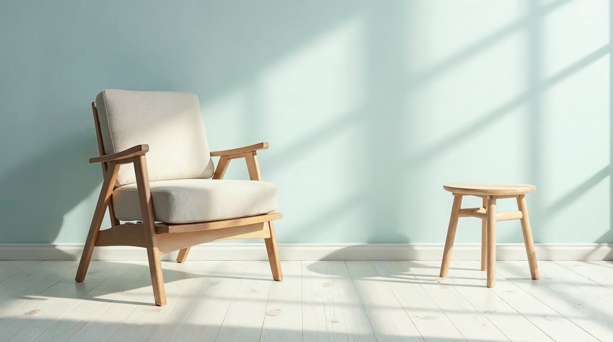
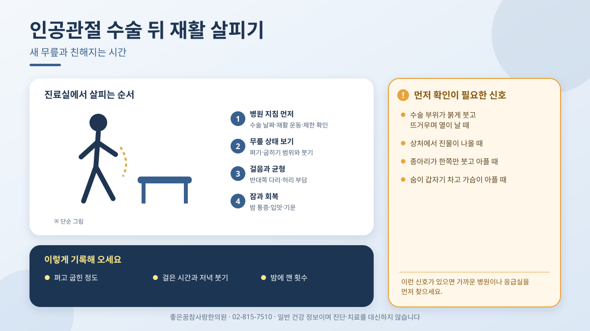

이종호 한의사 감수좋은꿈참사랑한의원 대표원장 (한의사 면허번호 19769)발행 2026-11-26 · 수정 2026-11-26
이 글의 차례
퇴원하고 집에 돌아온 첫날, 거실 소파에서 일어나려는데 무릎이 생각처럼 굽혀지지 않습니다. 보행기를 짚고 화장실까지 몇 걸음을 걷는 데도 숨이 찹니다. 수술은 잘 끝났다는데, 이 무릎으로 예전처럼 시장까지 걸어갈 수 있을지 막막해지는 순간입니다.
진료실에서 인공관절 수술을 받으신 분들을 뵈면, 수술 전 통증보다 수술 뒤 재활이 더 힘들었다는 말씀을 자주 듣습니다. 수술로 닳은 관절면은 바뀌었지만, 그 주변의 근육과 힘줄, 붓기, 굳은 관절막은 시간을 들여 다시 길들여야 하기 때문입니다.
재활은 하루하루의 변화가 눈에 잘 띄지 않아서 지치기 쉽습니다. 그래서 저는 어제보다 오늘 무릎이 몇 도 더 굽혀졌는지, 밤에 몇 번 깼는지처럼 작은 숫자를 함께 챙겨 보시길 권합니다. 작은 숫자가 모이면 몇 주 뒤에는 분명한 흐름이 보입니다. 그 흐름을 눈으로 확인하는 것이 다음 걸음을 내딛는 힘이 되어 줍니다.
이 글은 수술한 병원의 재활 계획을 대신하는 것이 아닙니다. 수술한 선생님과 물리치료실의 안내가 가장 우선이고, 그 곁에서 잠, 붓기, 반대쪽 다리와 허리의 부담처럼 함께 살필 수 있는 부분을 정리한 것입니다.
인공관절 수술은 무릎에서 무엇을 바꾸나요
무릎 인공관절 수술은 닳아서 아픈 관절면을 깎아 내고 금속과 특수 플라스틱으로 된 새 관절면을 씌우는 수술입니다. 연골이 거의 남지 않아 뼈끼리 부딪히던 자리를 매끄러운 면으로 바꾸어 주는 것이지요.
그런데 관절면만 무릎을 이루는 것은 아닙니다. 무릎을 펴는 허벅지 앞 근육, 굽히는 허벅지 뒤 근육, 관절을 감싸는 관절막과 인대가 함께 움직여야 무릎이 제 역할을 합니다. 수술 과정에서 이 조직들이 놀라고 부으면서 한동안 힘이 잘 들어가지 않게 됩니다.
그래서 재활의 목표는 크게 세 가지로 정리할 수 있습니다. 무릎을 끝까지 펴는 것, 일상에 필요한 만큼 굽히는 것, 그리고 허벅지 힘을 되찾아 혼자 안정적으로 걷는 것입니다. 이 셋은 서로 맞물려 있어서 하나가 늦어지면 다른 것도 함께 더뎌지기 쉽습니다.
왜 수술 뒤에도 붓고 뻣뻣한 시간이 이어질까요
수술 뒤 무릎은 상처가 아무는 과정에서 피와 체액이 모이고 붓습니다. 붓기가 있으면 관절 안이 꽉 찬 느낌이 들어 굽히기가 더 어렵고, 허벅지 앞 근육은 붓기 때문에 힘을 내는 신호가 약해집니다. 그래서 붓기와 뻣뻣함, 힘 빠짐이 함께 옵니다.
또 아프다 보니 무릎을 살짝 굽힌 채로 지내는 시간이 길어집니다. 무릎 밑에 베개를 받치고 자면 당장은 편하지만, 그 자세가 굳으면 무릎이 끝까지 펴지지 않는 쪽으로 흘러갈 수 있습니다. 많은 병원에서 무릎 밑 베개를 피하라고 안내하는 이유입니다.
붓기는 하루 중에도 오르내립니다. 아침에는 덜하고, 많이 걷거나 오래 서 있던 날 저녁에는 더 붓습니다. 이 흐름은 몇 주에서 몇 달에 걸쳐 서서히 줄어드는 경우가 많아서, 하루 붓기가 늘었다고 해서 회복이 거꾸로 간다고 단정하실 필요는 없습니다.
회복 시기마다 무엇이 달라지나요
수술 직후 몇 주는 상처가 아물고 붓기를 다스리며, 무릎을 펴고 굽히는 범위를 조금씩 넓히는 시기입니다. 보행기나 지팡이를 쓰고, 병원에서 알려 준 운동을 하루 여러 번 나누어 하게 됩니다. 이때는 무리하지 않는 꾸준함이 가장 중요합니다.
그다음 시기에는 보조 기구를 줄여 가며 혼자 걷는 연습, 계단 오르내리기, 의자에서 일어나기 같은 일상 동작을 늘려 갑니다. 굽히는 각도가 늘고 허벅지 힘이 붙으면서 걸음이 고르게 됩니다. 반대쪽 다리와 허리가 그동안의 부담으로 뻐근해지는 시기도 이 무렵입니다.
몇 달이 지나면 대부분의 일상 동작이 가능해지고, 무릎이 내 몸의 일부처럼 느껴지기 시작합니다. 다만 쪼그려 앉기, 무릎 꿇기, 뛰기처럼 무릎에 큰 힘이 실리는 동작은 수술한 선생님께 가능한 범위를 따로 여쭤 보시는 것이 좋습니다.

재활 중에 흔히 겪는 불편은 무엇인가요
가장 흔한 것은 밤에 무릎이 욱신거려 잠을 설치는 것입니다. 낮에 운동을 하고 나면 저녁부터 붓고 열감이 올라오며, 누워 있을 때 무릎을 둘 곳이 마땅치 않습니다. 잠이 모자라면 다음 날 운동할 힘도 떨어져서 재활 전체가 힘들어집니다.
수술 부위 바깥쪽 피부가 멍멍하거나 감각이 둔한 느낌도 자주 말씀하십니다. 수술 과정에서 피부의 가는 신경이 영향을 받아 생기는 경우가 많고, 시간이 지나며 범위가 줄어들기도 합니다. 이 부분은 수술한 병원에서 경과를 함께 보시면 됩니다.
반대쪽 무릎과 허리, 엉덩이의 뻐근함도 흔합니다. 수술한 다리를 아끼느라 몸무게를 반대쪽에 더 싣고, 보행기를 짚느라 손목과 어깨에도 힘이 들어갑니다. 수술한 무릎만 보지 말고 몸 전체의 균형을 함께 챙겨야 하는 이유입니다.
수술 전 관절염 통증과 수술 뒤 통증은 어떻게 다른가요
수술 전의 통증은 대개 걷거나 계단을 오를 때 관절 깊은 곳이 시큰하고 갈리는 느낌이었습니다. 수술 뒤의 통증은 결이 조금 다릅니다. 상처와 그 주변이 당기고, 붓기 때문에 무릎이 꽉 찬 듯 묵직하며, 운동한 날 저녁에 욱신거리는 느낌이 많습니다.
그래서 수술을 했는데 왜 아직 아프냐고 실망하시는 분이 많습니다. 그런데 이 통증은 회복 과정에서 나타나는 아픔인 경우가 많고, 붓기가 빠지고 근육이 붙어 가면서 함께 옅어지는 흐름을 보입니다. 수술 전과 같은 종류의 아픔인지, 다른 종류인지 구분해서 말씀해 주시면 도움이 됩니다.
다만 시간이 갈수록 오히려 통증이 커지거나, 한동안 괜찮다가 갑자기 다시 붓고 뜨거워진다면 경과가 다르게 흘러가는 신호일 수 있습니다. 이럴 때는 다음 예약일을 기다리지 말고 수술한 병원에 먼저 연락해 보시는 것이 좋습니다.
보행기와 지팡이는 언제까지 써야 하나요
보조 기구를 언제 내려놓을지는 수술한 병원에서 걸음 상태를 보고 정하는 것이 원칙입니다. 빨리 내려놓고 싶은 마음은 이해하지만, 허벅지 힘이 충분히 붙기 전에 혼자 걸으면 다리를 절룩이는 걸음이 몸에 배기 쉽습니다.
보행기에서 지팡이로 넘어갈 때는 지팡이를 수술하지 않은 쪽 손에 쥐는 것이 일반적입니다. 지팡이와 수술한 다리가 함께 앞으로 나가고, 그다음 반대쪽 다리가 따라오는 순서입니다. 처음에는 집 안에서 연습하고, 익숙해지면 짧은 바깥 산책으로 넓혀 가시면 됩니다.
걸음이 고르게 되었는지는 가족에게 뒤에서 걸음을 봐 달라고 하거나, 짧은 동영상을 찍어 보면 잘 보입니다. 앞에서 한 번, 옆에서 한 번 찍어 두시면 더 좋습니다. 한쪽으로 몸이 기울거나 수술한 다리를 짧게 딛는 모습이 보이면 진료 때 함께 보여 주세요.
먼저 이렇게 여쭙니다
처음 오시면 저는 대략 이런 순서로 여쭙니다. 미리 생각해 오시면 이야기가 훨씬 수월해집니다.
- 언제, 어느 쪽 무릎을, 어느 병원에서 수술하셨나요?
- 수술한 병원에서 받은 재활 운동과 피해야 할 동작은 무엇인가요?
- 지금 무릎은 어디까지 펴지고, 어디까지 굽혀지나요?
- 밤에 무릎 때문에 깨는 횟수는 어느 정도인가요?
- 보행기나 지팡이 없이 걸을 수 있는 거리는 어느 정도인가요?
- 반대쪽 무릎, 허리, 손목, 어깨에 새로 생긴 불편이 있나요?
- 드시는 진통제, 피를 묽게 하는 약, 다른 지병 약은 무엇인가요?
모든 질문에 정확히 답하지 못하셔도 괜찮습니다. 퇴원 안내문과 최근 일주일의 간단한 메모만 있어도 지금 어느 단계에 계신지 함께 가늠할 수 있습니다.
일상에서 먼저 해 볼 수 있는 것
재활 운동은 한 번에 오래 하기보다 하루에 여러 번 나누어 하는 편이 붓기와 통증을 덜 키웁니다. 병원에서 알려 준 운동을 아침, 점심, 저녁으로 쪼개고, 운동 뒤에는 잠시 다리를 심장보다 높게 올려 쉬어 보세요.
- 누워 있을 때 무릎 밑에 베개를 받치지 않고 발뒤꿈치 쪽을 살짝 올려 무릎 펴기
- 운동 뒤에는 병원 안내에 따라 냉찜질로 붓기 다스리기
- 의자는 팔걸이가 있고 앉는 면이 너무 낮지 않은 것 고르기
- 계단은 올라갈 때 수술하지 않은 다리 먼저, 내려갈 때 수술한 다리 먼저
- 화장실과 현관처럼 미끄러운 곳에 손잡이와 미끄럼 방지 깔개 두기
- 하루 걸은 시간과 거리를 조금씩, 일정하게 늘리기
통증이 무서워 움직임을 피하면 무릎은 더 굳습니다. 반대로 하루 컨디션이 좋다고 갑자기 많이 걸으면 다음 날 붓기가 크게 늘 수 있습니다. 오늘 한 만큼을 내일도 할 수 있을 정도, 그 선을 지키는 것이 오래 가는 방법입니다.
식사도 회복의 일부입니다. 상처가 아물고 근육이 다시 붙으려면 단백질이 필요합니다. 끼니마다 달걀, 두부, 생선, 살코기 가운데 하나를 곁들이시고, 진통제로 속이 불편하다면 그 점도 처방한 선생님께 말씀해 주세요.
잠자리도 함께 손보시면 좋습니다. 옆으로 누우실 때는 두 무릎 사이에 얇은 베개를 끼우면 수술한 무릎이 덜 비틀리고, 똑바로 누우실 때는 발목 아래를 살짝 올려 무릎이 펴진 채로 쉬게 해 주세요. 밤에 화장실 가는 길에는 작은 불을 켜 두어 어두운 데서 발을 헛딛지 않도록 합니다.
마음도 함께 챙겨 주세요. 재활이 길어지면 집에만 있는 시간이 늘고 기분이 가라앉기 쉽습니다. 가족과 짧은 산책 약속을 잡거나, 걸은 기록을 함께 보는 것만으로도 다음 날 운동할 힘이 생기곤 합니다.
한의원에서 함께 살필 수 있는 경우
- 무릎이 저녁마다 붓고 욱신거려 잠을 설치는 경우
- 수술한 다리를 아끼느라 반대쪽 무릎, 허리, 엉덩이가 뻐근한 경우
- 보행기를 오래 짚어 손목과 어깨가 결리는 경우
- 수술 뒤 입맛이 없고 기운이 쉽게 떨어지는 경우
- 허벅지와 종아리가 단단하게 뭉쳐 운동이 버거운 경우
좋은꿈참사랑한의원에 오시면 먼저 아래 '먼저 확인이 필요한' 신호가 없는지부터 봅니다. 그다음 맥을 짚고, 수술 부위의 붓기와 열감, 무릎 주변 근육의 긴장, 걸음걸이와 반대쪽 다리의 부담을 함께 살핍니다.
진찰한 내용을 바탕으로 수술 부위를 피해 주변 근육의 긴장을 푸는 침, 온열 관리, 반대쪽 다리와 허리의 불편을 다루는 진료, 한약 상담 가운데 지금 단계에 맞는 것을 정합니다. 수술 부위에 직접 하는 처치는 수술한 병원의 지침을 먼저 따릅니다.
한약을 상의할 때는 피를 묽게 하는 약과 진통제를 비롯해 드시는 약을 모두 확인하고 신중하게 정합니다. 처방받은 약은 상의 없이 멈추지 않으시고, 한의원 진료는 수술한 병원의 재활 치료와 나란히 가는 것으로 생각해 주시면 됩니다.
이렇게 기록해 오시면 상담이 쉬워집니다
재활은 하루 단위로 보면 제자리 같아도, 기록을 모아 보면 흐름이 보입니다. 1~2주 정도만 간단히 적어 보세요.
- 무릎을 펴고 굽힌 정도(병원에서 잰 각도가 있다면 그 숫자)
- 하루 걸은 시간이나 걸음 수, 보조 기구 사용 여부
- 저녁 붓기 정도와 밤에 깬 횟수
- 진통제를 드신 시각과 횟수
- 반대쪽 다리, 허리, 손목처럼 새로 불편해진 곳
빠진 날이 있어도 괜찮습니다. 기록이 있으면 어느 날 붓기가 늘었는지, 무엇을 한 다음 날 무릎이 편했는지가 보이고, 그것이 다음 일주일의 운동량과 진료 방향을 정하는 실마리가 됩니다.
새 무릎과 친해지는 시간
인공관절은 하루아침에 내 무릎이 되지 않습니다. 처음 몇 주는 낯선 손님 같고, 몇 달이 지나야 조금씩 내 다리처럼 느껴집니다. 그 사이에 지치는 것은 당연한 일이고, 조급해지지 않는 것도 재활의 한 부분입니다.
오늘 할 일은 거창하지 않습니다. 병원에서 배운 운동을 한 번 더 나누어 하고, 무릎 밑 베개를 빼고, 걸은 시간을 한 줄 적는 것. 다음에 오시면 그 기록부터 함께 펼쳐 보겠습니다.
이런 증상은 먼저 확인이 필요합니다
- 수술 부위가 갑자기 붉게 붓고 뜨거워지며 열이 나거나 상처에서 진물이 나오는 경우
- 종아리가 한쪽만 붓고 아프거나 숨이 갑자기 차고 가슴이 아픈 경우
이런 신호가 있으면 한의원보다 가까운 병원이나 응급실을 먼저 찾으세요.
함께 읽으면 좋은 글
- 계단에서 시큰하고 자주 붓는 무릎 퇴행성 관절염은 어떻게 살피나요?
- 수술을 받고 퇴원한 뒤 체력이 좀처럼 돌아오지 않을 때 한의원에서는 무엇을 살피나요?
- 무릎에 물이 찼을 때 초음파로는 무엇을 확인할 수 있나요?
- 다리 힘이 빠지고 걸음이 느려지는 근감소증은 어떻게 살피나요?
- 70대 어르신 집의 욕실과 현관은 낙상을 줄이려면 어떻게 점검하나요?

여쭙는 것
- 언제, 어느 쪽 무릎을, 어느 병원에서 수술하셨나요?
- 수술한 병원에서 받은 재활 운동과 피해야 할 동작은 무엇인가요?
- 지금 무릎은 어디까지 펴지고, 어디까지 굽혀지나요?
생활에서 해 볼 것
- 누워 있을 때 무릎 밑에 베개를 받치지 않고 발뒤꿈치 쪽을 살짝 올려 무릎 펴기
- 운동 뒤에는 병원 안내에 따라 냉찜질로 붓기 다스리기
- 의자는 팔걸이가 있고 앉는 면이 너무 낮지 않은 것 고르기
한의원에서 함께 살필 것
- 무릎이 저녁마다 붓고 욱신거려 잠을 설치는 경우
- 수술한 다리를 아끼느라 반대쪽 무릎, 허리, 엉덩이가 뻐근한 경우
- 보행기를 오래 짚어 손목과 어깨가 결리는 경우
먼저 확인이 필요한 신호
- 수술 부위가 갑자기 붉게 붓고 뜨거워지며 열이 나거나 상처에서 진물이 나오는 경우
- 종아리가 한쪽만 붓고 아프거나 숨이 갑자기 차고 가슴이 아픈 경우
한눈에 보는 표
| 구분 | 핵심 |
|---|---|
| 여쭙는 것 | 언제, 어느 쪽 무릎을, 어느 병원에서 수술하셨나요? 수술한 병원에서 받은 재활 운동과 피해야 할 동작은 무엇인가요? |
| 생활에서 해 볼 것 | 누워 있을 때 무릎 밑에 베개를 받치지 않고 발뒤꿈치 쪽을 살짝 올려 무릎 펴기 운동 뒤에는 병원 안내에 따라 냉찜질로 붓기 다스리기 |
| 한의원에서 함께 살필 것 | 무릎이 저녁마다 붓고 욱신거려 잠을 설치는 경우 수술한 다리를 아끼느라 반대쪽 무릎, 허리, 엉덩이가 뻐근한 경우 |
| 먼저 확인이 필요한 신호 | 수술 부위가 갑자기 붉게 붓고 뜨거워지며 열이 나거나 상처에서 진물이 나오는 경우 종아리가 한쪽만 붓고 아프거나 숨이 갑자기 차고 가슴이 아픈 경우 |
자주 묻는 질문
인공관절 수술을 받은 무릎 주변에 침 치료를 받아도 되나요?
수술 부위와 상처는 피하고, 주변 근육과 반대쪽 다리, 허리처럼 함께 불편한 곳을 중심으로 정합니다. 수술 날짜와 병원의 지침, 드시는 약을 먼저 확인한 뒤 진료 방향을 정합니다.
무릎 밑에 베개를 받치고 자면 편한데 계속 그래도 되나요?
당장은 편하지만 무릎이 굽은 채로 굳기 쉬워 많은 병원에서 피하도록 안내합니다. 수술한 병원에서 알려 준 자세를 따르시고, 잠자리가 불편하면 진료 때 함께 방법을 찾아보겠습니다.
재활 운동을 하면 아픈데 참고 해야 하나요?
운동할 때 약간 당기고 뻐근한 정도는 흔하지만, 다음 날까지 붓기와 통증이 크게 늘면 양을 줄이는 것이 좋습니다. 운동의 강도와 범위는 수술한 병원의 물리치료실과 상의해 맞추세요.
수술 뒤 한약을 먹어도 되나요?
피를 묽게 하는 약과 진통제를 비롯해 드시는 약을 모두 확인하고 신중하게 정합니다. 약 봉투나 처방전 사진을 가져와 주시면 함께 살펴보겠습니다.
반대쪽 무릎도 아파지기 시작했는데 괜찮을까요?
수술한 다리를 아끼느라 반대쪽에 무게가 더 실리면서 생기는 경우가 많습니다. 걸음걸이와 반대쪽 무릎 상태를 함께 살피고, 필요하면 수술한 병원에도 알려 경과를 같이 보시길 권합니다.
좋은꿈참사랑한의원은 재진 때 지난번 이야기부터 이어서 여쭙니다. 진료시간과 예약은 오시는 길에서 확인하세요.
어디서 상담받을 수 있나요?
좋은꿈참사랑한의원은 서울 동작구 만양로2길 2 신성빌딩 3층·5층(서울 동작구 상도동, 7호선 상도역 3번 출구 근처)에 있습니다. 한의사 3명(이종호 대표원장, 조영기 수석진료원장, 정원영 진료원장)이 진료합니다. 진료시간은 평일 09:30~20:00(점심 13:00~14:00), 토·일·공휴일 09:30~15:00이며, 방문 전 전화로 확인을 권합니다. 예약은 네이버 예약, 카카오톡 상담, 전화 02-815-7510로 받습니다.
이 글은 일반적인 건강 정보이며 개인의 진단이나 치료를 대신하지 않습니다. 증상이 있거나 복용 중인 약이 있다면 진료를 통해 확인하세요. 치료 효과는 개인마다 다를 수 있습니다.
작성 기준: 일반적으로 알려져 있는 건강 정보를 참고해 정리했습니다(대표원장 감수). 증상 기록은 1~2주 동안 하루 1회, 비슷한 시간에 적어 오시면 지난 상태와 비교하기 쉽습니다.